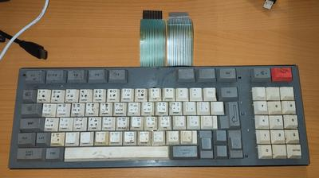
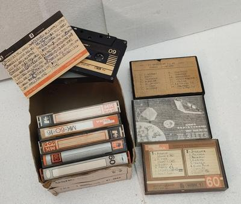
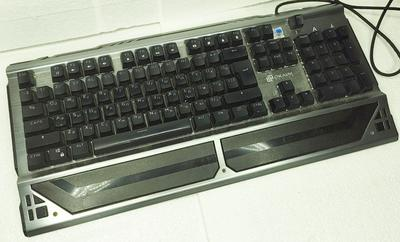
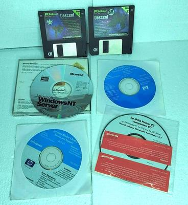
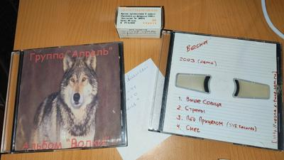

Осенняя барахолка
Давно не было постов с барахолки, но сегодня натащил всякого. Во-первых, клава от Кворума-БК04. Шлейфы целые (а вся ценность сейчас в них), да и сама выглядит терпимо. По крайней мере не чета клаве из видео про БК-05М 😄 100 рублей. Бывает у меня, что потом жалею, что не дал больше, чем просят. Вот это тот случай. Мужик был явно не в курсе цен, да и по виду случайно заглянувший, а не барыга.
ZX-Кассеты. Три точно с играми, остальные на обложках имеют непонятный шифротекст, я не разгадал. Ванганул бы, что это адреса загрузки или запуска, но странно, что без названий. Но может вкладки с названиями сдали на макулатуру в голодные 90-е 🤨 Правая верхняя 100, остальные кучей по 20. Любопытно, это разные продавцы с разными ценами, но на той, что за стольник, тоже есть такие же числовые шифровки. Продавцы были рядом, подозреваю, что первый поглядел товар второго, увидел кассету с играми и решил, что он сейчас купит за 20, а перепродаст за 200. Хорошо хоть остальные не увидел. Ну и я в итоге сбил у него цену в два раза.
Дискеты с демкой пц-игры Descent из журнала PC Format. Красивые. Еще дистрибутив Win 4.0 NT. С удивлением из надписи на диске узнал, что ее можно ставить на Alpha, MIPS и PowerPC, надо почитать про это подробней. Какие-то диски с сервис-мануалами HP. Там было штук 15 таких, я взял те, на которых маны для handheld, наладонников. Если что-то уникальное, чего нет в инете, возьму в следующий раз все остальные. Эти CD плюс пара музыкальных обошлись в 100.
Самопальные музыкальные диски групп Апрель и Весна. Уральский рок начала 00-х, о первой вообще ничего не нашел (но есть визитка с телефоном участника), от второй в webarchive остался заброшенный в 2004 сайт. Чб фотопленка из 80-х с семейным застольем, плюс одна NSFW-фотка с замазанным лицом на фоне того же ковра. Еще у этого продавца взял коробку дискет + те дискеты Descent тоже отсюда. Снова 100 рублей за все.
Механическая клава, опять же за стольник. Полноразмерная (удобно, мне как раз кейкапы на нампад нужны), на синих свичах. Так-то терпеть не могу синие для работы, они громкие, люблю красные. Но для клавиатур новодельных ретрокомпов, которые сейчас все сплошь под такие CherryMX-клоны делают, и синие тоже вполне годятся, там же не приходится часами печатать. Это уже четвертая или пятая механика с барахолки за полтора года. Все были не дороже 200 рублей. Учитывая, что сотня свичей на маркетплейсе стоит тыщу минимум, и набор кейкапов где-то столько же, экономия просто невероятная. Кстати, мехклавы сейчас и на авито очень дешевые бывают, и даже с хотсвапом — они удобней, из них свичи можно просто вытащить, а не выпаивать весь вечер. Кроме экономии еще и моральное удовлетворение — ведь выпотрошить писюканскую технику на благо спектрума всегда приятно.










Комментарии